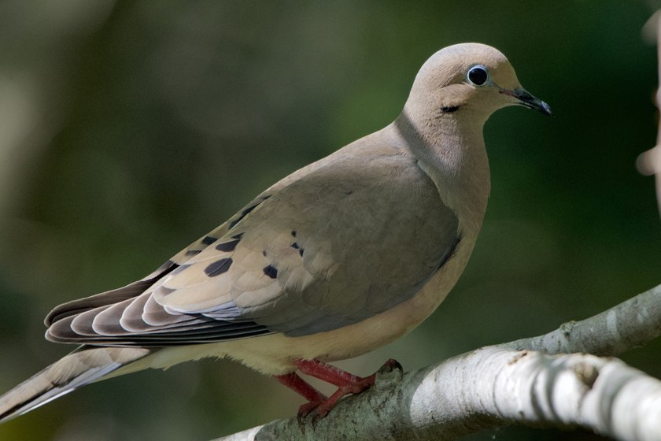

Mourning Dove
What to look for
Soft gray-brown body, black wing spots, and a long pointed tail. Watch for the small head and listen for a low, soft coo.
Where to look
Look on the ground in open yards or perched on a wire.

Soft gray-brown body, black wing spots, and a long pointed tail. Watch for the small head and listen for a low, soft coo.
Look on the ground in open yards or perched on a wire.